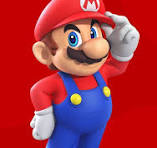

Trabajo De 3 En Aula
Página utilizando: div, h1, font, h2, p, i, center, img, hr, dl, dt, dd, ol, li, ul, video, source.
A continuación verás todo eso
Mario Bros es un juego de plataformas muy popular en diferentes consolas.

En esta imagen podemos ver a Mario, el personaje principal.
Personajes y elementos importantes del juego:
- Mario
- El héroe del juego, siempre listo para rescatar a la princesa Peach.
- Luigi
- Hermano de Mario, también es un valiente aventurero.
- Princesa Peach
- La princesa del Reino Champiñón que suele ser rescatada por Mario.
- Bowser
- El principal villano que secuestra a la princesa Peach.
Niveles más conocidos de Mario Bros:
- Castillo de Bowser
- Reino Champiñón
- Mundo de Hielo
- Islas flotantes
Tipos de objetos y power-ups:
- Super Champiñón: hace crecer a Mario.
- Flor de Fuego: permite lanzar bolas de fuego.
- Estrella: invencibilidad temporal.
- Monedas: coleccionables que aumentan la puntuación.
Video de ejemplo: